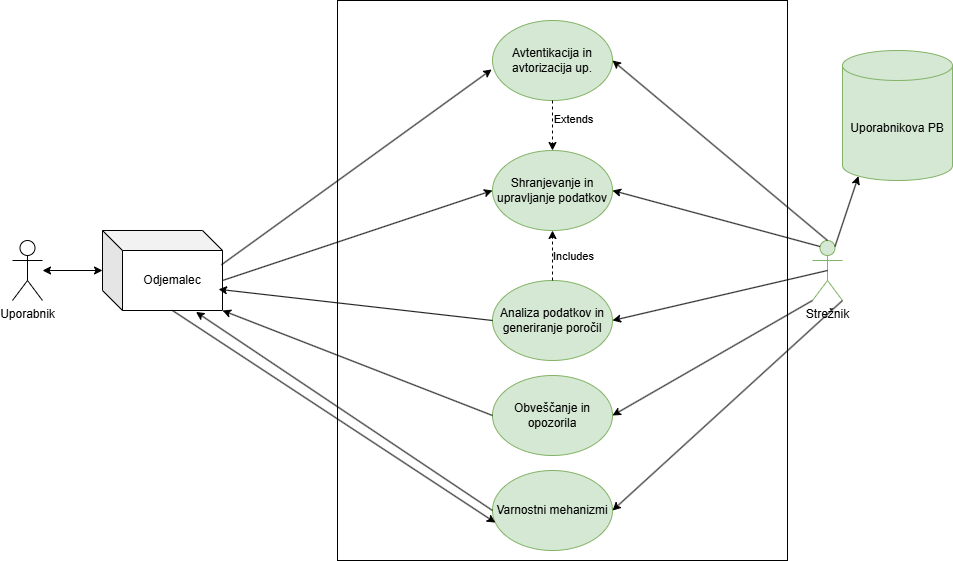

Funkcionalnosti strežnika
1. Avtentikacija in avtorizacija uporabnikov
Opis: Strežnik upravlja prijavo in registracijo uporabnikov ter zagotavlja varnostni dostop do aplikacije.
Vhodi:
- Uporabniško ime in geslo (pri prijavi).
- E-pošta, geslo in druge podatke (pri registraciji).
Izhodi:
- JWT (JSON Web Token) za avtentikacijo.
- Potrditev uspešne prijave ali registracije.
Postopek:
- Uporabnik pošlje zahtevo za prijavo ali registracijo.
- Strežnik preveri podatke in ustvari JWT za avtentikacijo.
- Strežnik shrani podatke o uporabniku v bazo podatkov.
2. Shranjevanje in upravljanje podatkov
Opis: Strežnik shranjuje podatke o uporabnikih, transakcijah, proračunih in drugih finančnih podatkih.
Vhodi:
- Podatki o transakcijah (znesek, datum, kategorija, opis).
- Podatki o proračunih (mesečni prihodki in odhodki).
Izhodi:
- Shranjeni podatki v bazi podatkov.
- Potrditev uspešnega shranjevanja.
Postopek:
- Uporabnik pošlje podatke preko aplikacije.
- Strežnik preveri in shrani podatke v bazo podatkov.
- Strežnik vrne potrditev o uspešnem shranjevanju.
3. Analiza podatkov in generiranje poročil
Opis: Strežnik analizira podatke o transakcijah in proračunih ter generira poročila in priporočila za uporabnike.
Vhodi:
- Zgodovina transakcij.
- Podatki o proračunih.
Izhodi:
- Poročila o mesečni porabi.
- Priporočila za varčevanje.
Postopek:
- Strežnik analizira podatke z algoritmi za analizo vzorcev.
- Generira poročila in priporočila.
- Pošlje poročila uporabniku preko aplikacije.
6. Obveščanje in opozorila
Opis: Strežnik pošilja obvestila uporabnikom o pomembnih finančnih dogodkih.
Vhodi:
- Zapadli računi.
- Presežki proračuna.
- Doseženi finančni cilji.
Izhodi:
- Obvestila na zaslonu ali po e-pošti.
Postopek:
- Strežnik spremlja finančne dogodke.
- Pošlje obvestila uporabniku, ko se zgodi pomemben dogodek.
7. Varnostni mehanizmi
Opis: Strežnik zagotavlja varnost podatkov z uporabo šifriranja in drugih varnostnih mehanizmov.
Vhodi:
- Podatki o uporabnikih in transakcijah.
Izhodi:
- Šifrirani podatki v bazi podatkov.
Postopek:
- Strežnik šifrira podatke pred shranjevanjem v bazo.
UML diagram primerov uporabe
Spodaj je prikazan UML diagram, ki prikazuje interakcijo uporabnika in drugih sistemov s strežnikom.
